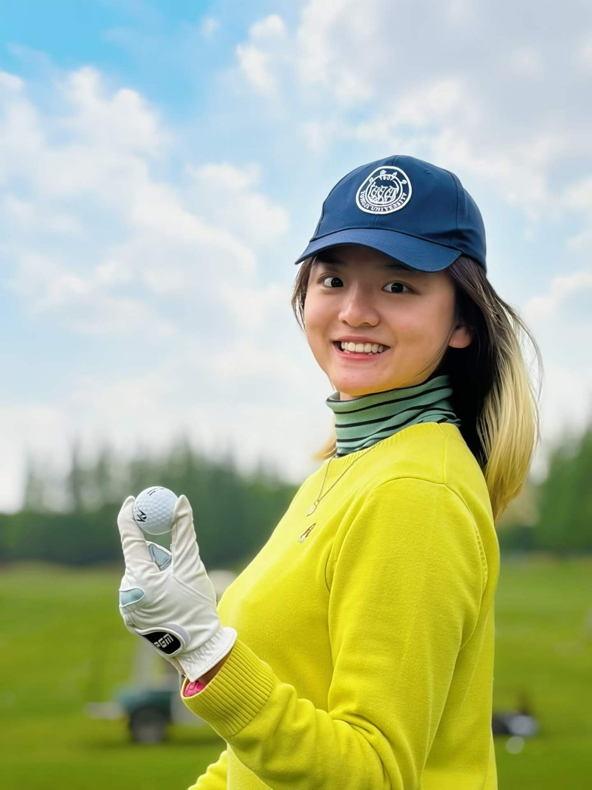
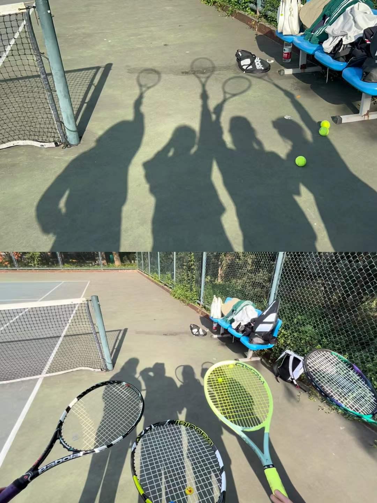
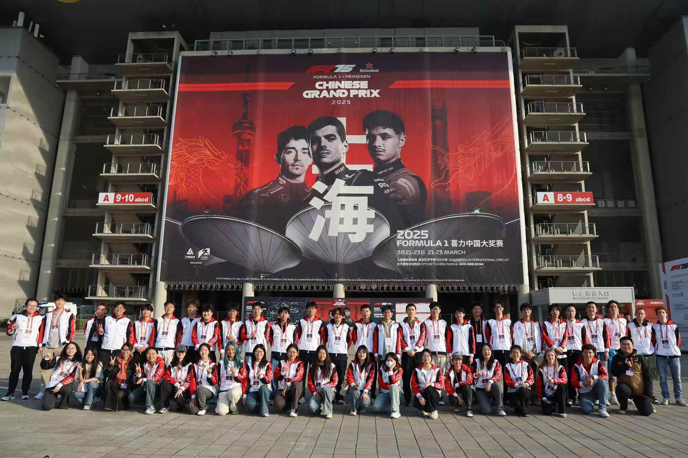
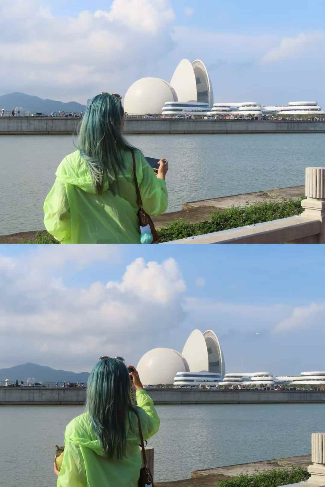
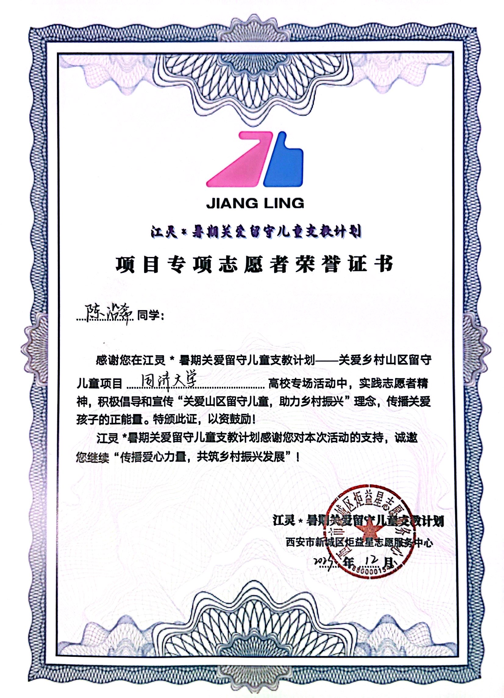

On the course
Golf
I enjoy golf and represented Tongji University at the 2025–2026 Shanghai University Golf Championship.
Women's 50-yard event: Second Prize.
Women's putting: Third Prize.
Team skills competition: Second Prize.
Sport · Service · Exploration
Away from research, I enjoy playing golf and tennis, volunteering, and traveling to explore the world.

On the course
I enjoy golf and represented Tongji University at the 2025–2026 Shanghai University Golf Championship.
Women's 50-yard event: Second Prize.
Women's putting: Third Prize.
Team skills competition: Second Prize.

On the court
I also enjoy playing tennis—a favorite way to stay active and spend time with friends.

At the circuit · 2025 & 2026
I volunteered at the Formula 1 Chinese Grand Prix in Shanghai for two consecutive years, in 2025 and 2026.
2026 volunteer service: March 13–15.

Somewhere new
I love traveling and exploring the world—discovering new places and seeing life from different perspectives.
The human side of engineering matters to me.
Alongside research, I take part in volunteer initiatives and student outreach. Supporting others, sharing opportunities, and contributing to a team are part of how I hope to grow as a researcher and as a person.
My extracurricular involvement was also recognized with Tongji University’s Social Activity Scholarship in 2024 and 2025.
